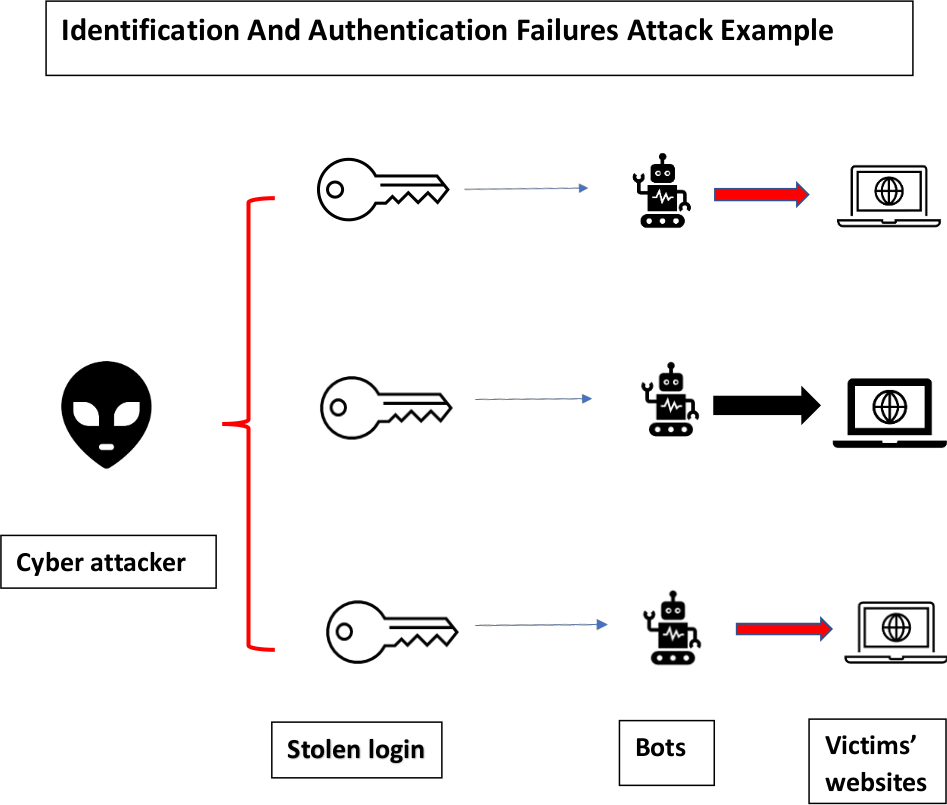

OWASP 2021 was adapted from 2017 with some restructuring and new additions. Broken Access Control took top position Server side Request Forgery was a new addition at no. 10. (OWASP 2021).
I will take up the example of Broken Authentication 2017, which was has now become Identification and Authentication Failure 2021. It has moved from the second position to the 7 th position.
Common Identification and Authentication Failures include attackers
easily using brute force , automated attacks (where the attacker has a list of user IDs and passwords) to get to the data and poorly managed passwords including passwords which are stored in plain text They also involve User Session issues where the session is reused after login or it’s exposed. ( cheap security) (Cheap SSL certificates)
A few years ago the South Carolina’s Department of Revenue suffered a massive hack due to a weak password used by an employee. As a result, 3.6 million taxpayers’ social security numbers and 387,000 credit card numbers were stolen.(Brown R 2012)
Some of the ways to protect against Identification and Authentication Failure include Zero Trust Identity Aware Proxy, Multi Factor Authentication, CAPTCHA
Challenge and Enhanced authentication and session management.(Support 15.com)
I have used a sequence diagram for my UML as captures how events are executed over time, and how messages are distributed between objects in response to the events carried out. Sequence diagrams are read from left to right, to understand the flows of control between objects (Braincart.com)
